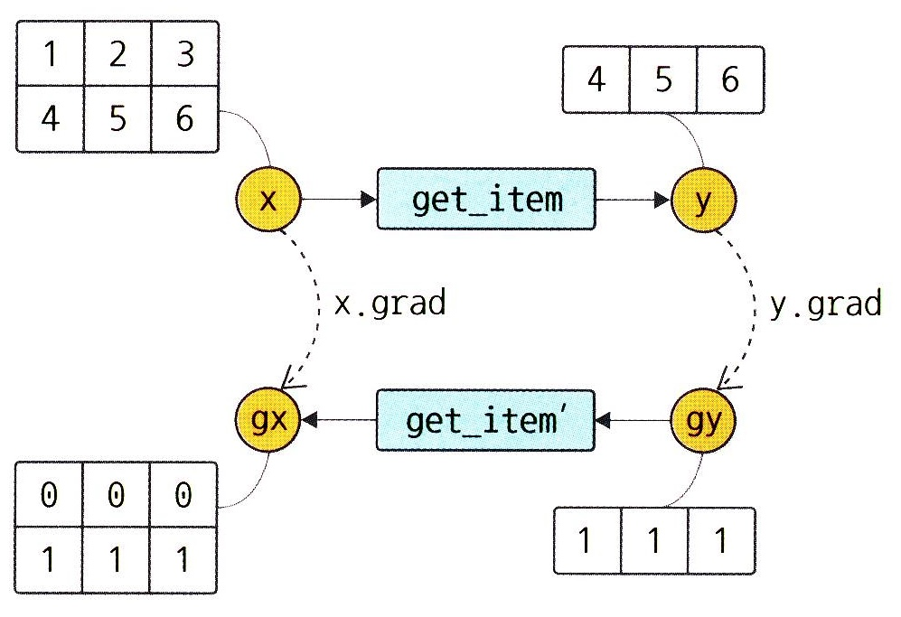
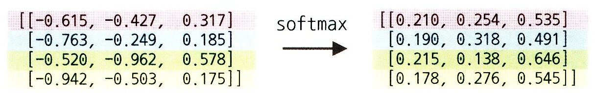

47단계 소프트맥스 함수와 교차 엔트로피 오차
지금까지 신경망을 사용하여 회귀 문제를 풀어왔는데, 앞으로는 새로운 유형의 문제에 도전해 보겠습니다. 바로 다중 클래스 분류(multi-class classification)입니다. 다중 클래스 분류는 이름처럼 ‘여러 클래스’로 ‘분류’하는 문제로, 분류 대상이 여러 가지 클래스 중 어디에 속하는지 추정합니다. 이번 단계에서는 다중 클래스 분류를 위한 사전 준비를 합니다. 그리고 다음 단계에서 DeZero를 사용하여 다중 클래스 분류를 구현하겠습니다.
47.1 슬라이스 조작 함수
우선 사전 준비로 편의 함수를 하나 추가합니다. get_item이라는 함수로, 당장은 함수 사용법만 보여드리겠습니다. 구현 방법에 관심 있는 분은 ‘부록 B’를 참고하세요. 다음은 get_item 함수의 사용 예입니다.
import numpy as np
from dezero import Variable
import dezero.functions as F
x = Variable(np.array([[1, 2, 3], [4, 5, 6]]))
y = F.get_item(x, 1)
print(y)
실행 결과
variable([4 5 6])
이와 같이 get_item 함수는 Variable의 다차원 배열 중에서 일부를 슬라이스(slice)하여 뽑아줍니다. 이 예에서는 (2, 3) 형상의 x에서 1번째 행의 원소를 추출했습니다. 이 함수는 DeZero 함수로 구현했기 때문에 역전파도 제대로 수행합니다. 확인차 앞의 코드 뒤에 다음 코드를 추가해보세요.
y.backward()
print(x.grad)
실행 결과
variable([[0. 0. 0.]
[1. 1. 1.]])
y.backward()를 호출하여 역전파를 해봤습니다(이때 y.grad = Variable(np.ones_like(y.data))로, 기울기가 자동으로 채워집니다). 슬라이스로 인한 ‘계산’은 다차원 배열의 데이터 일부를 수정하지 않고 전달하는 것입니다. 따라서 그 역전파는 원래의 다차원 배열에서 데이터가 추출된 위치에 해당 기울기를 설정하고, 그 외에는 0으로 설정합니다. 그림으로는 [그림 47-1]과 같습니다.
그림 47-1 get_item 함수의 순전파와 역전파 예

(순전파/역전파 흐름: 순전파에서는 x: [[1, 2, 3], [4, 5, 6]] $\rightarrow$ get_item $\rightarrow$ y: [4, 5, 6]로 진행되며, 역전파에서는 gy: [1, 1, 1] $\rightarrow$ get_item' $\rightarrow$ gx: [[0, 0, 0], [1, 1, 1]]로 진행됨)
NOTE 다차원 배열의 일부를 추출하는 작업을 ‘슬라이스’라고 합니다. 파이썬에서는 리스트나 튜플인
x에 대해x[1]이나x[1:4]같은 형태로 슬라이스 조작을 할 수 있습니다.
또한 get_item 함수를 사용하면 다음 코드 예처럼 같은 인덱스를 반복 지정하여 동일한 원소를 여러 번 빼낼 수 있습니다.
x = Variable(np.array([[1, 2, 3], [4, 5, 6]]))
indices = np.array([0, 0, 1])
y = F.get_item(x, indices)
print(y)
실행 결과
variable([[1 2 3]
[1 2 3]
[4 5 6]])
이상이 DeZero의 get_item 함수입니다. 이어서 get_item 함수를 Variable의 메서드로도 사용할 수 있게 특수 메서드로 설정합니다.
Variable.__getitem__ = F.get_item # Variable의 메서드로 설정
y = x[1]
print(y)
y = x[:, 2]
print(y)
실행 결과
variable([4 5 6])
variable([3 6])
이렇게 해두면 x[1]이나 x[:, 2] 등의 기법을 사용할 때도 get_item 함수가 불립니다. 더구나 이 슬라이스 작업의 역전파도 올바르게 이루어지죠. 이 특수 메서드 설정은 dezero/core.py의 setup_variable 함수에서 수행하게 합니다(setup_variable 함수는 DeZero 초기화 시
호출되는 함수입니다). 이것으로 Variable 인스턴스를 자유롭게 슬라이스할 수 있게 되었으니, 이번 단계의 주제로 넘어가겠습니다.
47.2 소프트맥스 함수
다중 클래스 분류를 신경망으로 하게 되면 지금까지 선형 회귀 때 이용한 신경망을 그대로 사용할 수 있습니다. 앞서 MLP 클래스로 구현해둔 신경망을 그대로 이용할 수 있다는 뜻입니다. 예를 들어 입력 데이터의 차원 수가 2이고 3개의 클래스로 분류하는 문제라면 다음과 같이 작성할 수 있습니다.
steps/step47.py
from dezero.models import MLP
model = MLP((10, 3))
MLP((10, 3)) 코드는 2층으로 이루어진 완전연결 신경망을 만들어줍니다. 첫 번째 완전연결 계층의 출력 크기는 10이고, 두 번째 완전연결계층의 출력 크기는 3입니다. 이제 model은 입력 데이터를 3차원 벡터(원소가 3개인 벡터)로 변환합니다. 실제로 적당한 데이터를 입력해보겠습니다.
steps/step47.py
x = np.array([[0.2, -0.4]])
y = model(x)
print(y)
실행 결과
variable([[-0.6150578 -0.42790162 0.31733288]])
x의 형상은 (1, 2)입니다. 샘플 데이터가 하나 있고, 그 데이터는 원소가 2개인 2차원 벡터임을 뜻합니다. 그리고 신경망의 출력 형태는 (1, 3)입니다. 이는 곧 하나의 샘플 데이터가 3개의 원소(= 3차원 벡터)로 변환된다는 말입니다. 이때 3차원 벡터의 원소 각각이 하나의 클래스에 해당합니다. 그리고 출력된 벡터에서 값이 가장 큰 원소의 인덱스가 이 모델이 분류한(정답이
라고 예측한) 클래스입니다. 앞의 예는 (0번, 1번, 2번 원소 중) 2번 원소가 0.31733288으로 가장 크기 때문에 2번 클래스로 분류한 것입니다.
NOTE 앞의 코드에서는 입력 데이터가 하나뿐이었지만 여러 데이터를 한꺼번에 처리할 수도 있습니다. 예를 들어
x = np.array([[0.2, -0.4], [0.3, 0.5], [1.3, -3.2], [2.1, 0.3]])처럼 하면 4개의 입력 데이터를 하나로 묶어 전달합니다. 그러면y = model(x)코드는 입력 데이터 4개를 한꺼번에 처리해주죠. 이때y의 형상(y.shape)은(4, 3)이 되며,i번째 입력 데이터는x[i]가 되고, 그에 대응하는 출력은y[i]가 됩니다.i의 값은 물론 0~3 사이의 정수입니다.
이번 코드 예시에서는 신경망의 출력이 단순한 ‘수치’인데, 이 수치를 ‘확률’로 변환할 수 있습니다. 이 일을 해주는 것이 소프트맥스 함수(softmax function)입니다. 소프트맥스 함수는 다음 식으로 표현됩니다.
\[p_k = \frac{\exp(y_k)}{\sum_{i=1}^{n} \exp(y_i)} \tag{식 47.1}\]여기서 소프트맥스 함수의 입력 $y_k$ 가 총 $n$ 개라고 가정합니다($n$ 은 ‘클래스 수’). 그리고 [식 47.1]은 $k$ 번째 출력 $p_k$ 를 구하는 계산식을 보여줍니다. 소프트맥스 함수의 분자는 입력 $y_k$ 의 지수 함수고, 분모는 모든 입력의 지수 함수의 총합입니다. 따라서 $0 \le p_i \le 1$ 이고, $p_1 + p_2 + \cdots + p_n = 1$ 이 성립하여 $(p_1, p_2, \cdots, p_n)$ 의 원소 각각을 확률로 해석할 수 있게 됩니다.
그럼 DeZero용 소프트맥스 함수를 구현해봅시다. 우선 입력 데이터가 하나(샘플 데이터가 하나)인 경우에 한정하여 소프트맥스 함수를 구현하겠습니다. 코드는 다음과 같습니다.
steps/step47.py
from dezero import Variable, as_variable
import dezero.functions as F
def softmax1d(x):
x = as_variable(x)
y = F.exp(x)
sum_y = F.sum(y)
return y / sum_y
보다시피 DeZero 함수들을 사용하여 [식 47.1]을 코드로 옮기면 됩니다(DeZero의 Exp 클래스와 exp 함수는 functions.py에 존재합니다). 첫 번째 줄 x = as_variable(x)는 x가 ndarray 인스턴스인 경우 Variable 인스턴스로 변환해줍니다.
NOTE 이 코드의
y / sum_y계산에서는y와sum_y의 형상이 다르기 때문에 형상을 일치시켜주는 브로드캐스트가 일어납니다.DeZero는 브로드캐스트에 대한 대응을 이미 마쳤으므로 브로드캐스트가 일어나더라도 역전파를 올바르게 수행합니다.
그러면 softmax1d 함수를 사용해볼까요?
steps/step47.py
x = Variable(np.array([[0.2, -0.4]]))
y = model(x)
p = softmax1d(y)
print(y)
print(p)
실행 결과
variable([[-0.61505778 -0.42790161 0.31733289]])
variable([[0.21068638 0.25404893 0.53526469]])
보다시피 p의 각 원소는 0 이상 1 이하이고, 총합은 1이 됩니다. 이처럼 신경망의 출력을 ‘확률’로 변환할 수 있었습니다.
CAUTION 소프트맥스 함수의 계산은 지수 함수로 이루어지기 때문에 결괏값이 너무 커지거나 작아지기 쉽습니다. 따라서 소프트맥스 함수를 구현할 때는 오버플로 문제에 잘 대처해야 합니다. 이 책에서는 설명을 생략하니, 소프트맥스 함수를 더 잘 구현하는 방법은 『밑바닥부터 시작하는 딥러닝』의 ‘3.5.2 소프트맥스 함수 구현 시 주의점’ 절을 참고하세요.
이어서 배치(batch) 데이터에도 소프트맥스 함수를 적용할 수 있도록 확장하겠습니다. [그림 47-2]와 같이 샘플 데이터 각각에 소프트맥스 함수를 적용하는 경우를 생각해보죠.
그림 47-2 2차원 데이터에 소프트맥스 함수를 적용하는 예

[[ -0.615, -0.427, 0.317] softmax [[0.210, 0.254, 0.535]
[ -0.763, -0.249, 0.185] ---------> [0.190, 0.318, 0.491]
[ -0.520, -0.962, 0.578] [0.215, 0.138, 0.646]
[ -0.942, -0.503, 0.175]] [0.178, 0.276, 0.545]]
배치 데이터도 처리할 수 있는 소프트맥스 함수는 다음과처럼 구현할 수 있습니다.*
dezero/functions.py
def softmax_simple(x, axis=1):
x = as_variable(x)
y = exp(x)
sum_y = sum(y, axis=axis, keepdims=True)
return y / sum_y
인수 x는 2차원 데이터라고 가정합니다. 그리고 인수 axis에서 어떤 축을 따라 소프트맥스 함수를 적용할지 정합니다. axis=1이면 소프트맥스 함수가 [그림 47-2]처럼 적용됩니다. 합계 계산에서는 keepdims=True이므로 각 행에서 [식 47.1]의 나눗셈이 이루어지게 됩니다.
참고로 여기서 구현한 softmax_simple 함수는 DeZero 함수를 사용한 간단한 구현으로, 올바른 결과를 내지만 개선할 점도 있습니다. 더 나은 구현 방식은 (다시 이야기하지만) Function 클래스를 상속하여 Softmax 클래스를 구현하고 파이썬 함수로 softmax를 구현하는 것입니다. 여기에서는 설명을 생략하니 관심 있는 분은 dezero/functions.py를 참고하기 바랍니다.
47.3 교차 엔트로피 오차
선형 회귀에서는 손실 함수로 평균 제곱 오차를 이용했습니다. 하지만 다중 클래스 분류에 적합한 손실 함수는 따로 있습니다. 흔히 교차 엔트로피 오차(cross entropy error)를 사용하며, 다음 식으로 정의됩니다.
\[L = -\sum_{k} t_k \log p_k \tag{식 47.2}\]여기서 $t_k$ 는 정답 데이터의 $k$ 차원째 값을 나타냅니다. 정답 데이터의 각 원소는 정답에 해당하는 클래스면 1로, 그렇지 않으면 0으로 기록되어 있습니다. 이러한 표현 방식을 원핫 벡터(one-hot vector)라고 합니다. 벡터를 구성하는 여러 원소 중 한 원소만 핫(hot)하다(값이 1이다)는 뜻입니다. 또한 $p_k$ 는 신경망에서 소프트맥스 함수를 적용한 후의 출력입니다.
* 이 코드는 dezero/functions.py에서 정의합니다. exp 함수와 sum 함수 역시 같은 dezero/functions.py에 정의되어 있으므로 DeZero를 F.exp()가 아닌 단순히 exp()로 호출합니다.
교차 엔트로피 오차를 뜻하는 [식 47.2]를 더 간단하게 표현할 수도 있습니다. 예를 들어 $\mathbf{t} = (0, 0, 1)$ 이고 $\mathbf{p} = (p_0, p_1, p_2)$ 인 경우를 [식 47.2]에 대입하면 $L = -\log p_2$ 가 됩니다. 다시 말해, 정답 클래스에 해당하는 번호의 확률 $\mathbf{p}$ 를 추출함으로써 교차 엔트로피 오차를 계산할 수 있습니다. 따라서 정답 데이터에 의해 정답 클래스의 번호가 $t$ 로 주어지면 다음처럼도 계산할 수 있습니다.
\[L = -\log \mathbf{p}[t] \tag{식 47.3}\]여기서 $\mathbf{p}[t]$ 는 벡터 $\mathbf{p}$ 에서 $t$ 번째 요소만을 추출한다는 뜻입니다. 이 슬라이스 작업은 이번 단계를 시작할 때(47.1절) DeZero에 갖춰둔 기능입니다.
CAUTION 이번 교차 엔트로피 오차 설명은 데이터가 하나인 경우에 대한 것입니다. 만약 데이터가 $N$ 개라면 각 데이터에서 교차 엔트로피 오차를 구하고, 전체를 더한 다음 $N$ 으로 나눕니다. 즉, 평균 교차 엔트로피 오차를 구합니다.
그럼 교차 엔트로피 오차를 구현해봅시다. ‘소프트맥스 함수’와 ‘교차 엔트로피 오차’를 한꺼번에 수행하는 함수를 softmax_cross_entropy_simple(x, t)라는 이름으로 구현하겠습니다.
dezero/functions.py
def softmax_cross_entropy_simple(x, t):
x, t = as_variable(x), as_variable(t)
N = x.shape[0]
p = softmax(x) # 또는 softmax_simple(x)
p = clip(p, 1e-15, 1.0) # log(0)을 방지하기 위해 p의 값을 1e-15 이상으로 한다.
log_p = log(p) # log는 DeZero 함수
tlog_p = log_p[np.arange(N), t.data]
y = -1 * sum(tlog_p) / N
return y
인수 x는 신경망에서 소프트맥스 함수를 적용하기 전의 출력이며, t는 정답 데이터입니다. 이 정답 데이터로는 정답 클래스의 번호(레이블)가 주어진다고 가정합니다(원핫 벡터가 아닙니다).
앞 코드의 p = softmax(x)에서 p의 원소값은 0 이상 1 이하입니다. 이어서 log 계산을 수행합니다. 이때 log 함수에 0을 건네면 오류(정확하게는 경고)가 발생하므로, 이를 방지하기
위해 값이 0이면 1e-15라는 작은 값으로 대체합니다. 이 일을 해주는 것이 clip 함수입니다. clip 함수는 clip(x, x_min, x_max) 형태로 사용하는데, x(Variable 인스턴스)의 원소가 x_min 이하이면 x_min으로 변환하고, x_max 이상이면 x_max로 변환해줍니다. clip 함수 구현에 관한 설명은 생략하겠습니다(코드는 dezero/functions.py에 있습니다).
한편 np.arange(N)은 [0, 1, ..., N-1] 형태의 ndarray 인스턴스를 생성해줍니다. 따라서 log_p[np.arange(N), t.data] 코드는 log_p[0, t.data[0]], log_p[1, t.data[1]], …와 정답 데이터(t.data)에 대응하는 모델의 출력을 구하고, 그 값을 1차원 배열에 담아줍니다.
CAUTION 앞의
softmax_cross_entropy_simple함수는 간단한 구현입니다. 더 나은 구현은dezero/functions.py에softmax_cross_entropy함수로 구현되어 있습니다. 지면에서는 이해하기 쉽도록 간단한 구현을 기준으로 설명했습니다.
그러면 다중 클래스 분류를 하는 신경망에 구체적인 데이터를 주어 교차 엔트로피 오차를 계산해보겠습니다.
x = np.array([[0.2, -0.4], [0.3, 0.5], [1.3, -3.2], [2.1, 0.3]])
t = np.array([2, 0, 1, 0])
y = model(x)
loss = F.softmax_cross_entropy_simple(y, t)
# 혹은 F.softmax_cross_entropy(y, t)
print(loss)
실행 결과
variable(1.4967442524053058)
먼저 입력 데이터 x와 정답 데이터 t를 준비합니다. 정답 데이터에는 정답 클래스의 번호가 기록되어 있습니다. 그런 다음 y = model(x)에서 변환을 하고, F.softmax_cross_entropy_simple(y, t)에서 손실 함수를 계산합니다. 이상으로 다중 클래스 분류를 해볼 준비를 마쳤습니다. 다음 단계에서는 다중 클래스 분류를 실제로 해보겠습니다.